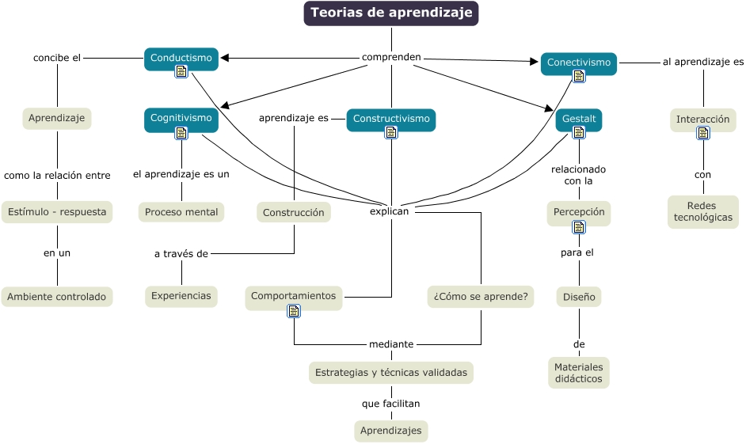

WARNING:
JavaScript is turned OFF. None of the links on this concept map will
work until it is reactivated.
If you need help turning JavaScript On, click here.
Este Cmap, tiene información relacionada con: mapa_docencia_virtual_unid_1.cmap, Cognitivismo explican ¿Cómo se aprende?, Aprendizaje como la relación entre Estímulo - respuesta, Gestalt explican ¿Cómo se aprende?, Teorias de aprendizaje comprenden Constructivismo, Constructivismo explican ¿Cómo se aprende?, Conectivismo explican ¿Cómo se aprende?, Teorias de aprendizaje comprenden Gestalt, Interacción con Redes tecnológicas, Estrategias y técnicas validadas que facilitan Aprendizajes, Conductismo explican Comportamientos, Gestalt explican Comportamientos, Conductismo explican ¿Cómo se aprende?, Cognitivismo el aprendizaje es un Proceso mental, Constructivismo explican Comportamientos, Teorias de aprendizaje comprenden Cognitivismo, Constructivismo aprendizaje es Construcción, Gestalt relacionado con la Percepción, Construcción a través de Experiencias, Estímulo - respuesta en un Ambiente controlado, Conectivismo al aprendizaje es Interacción
